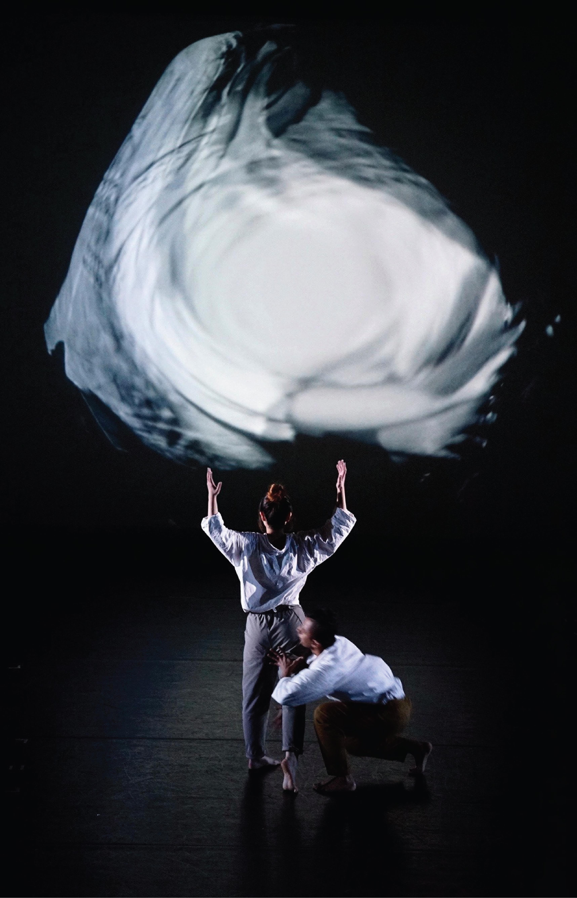
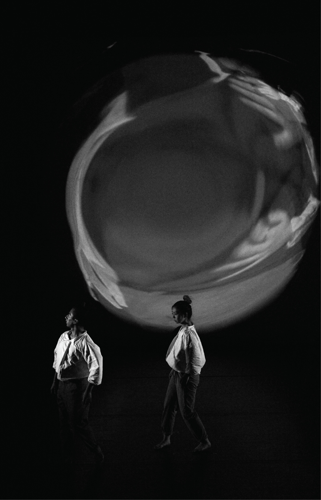
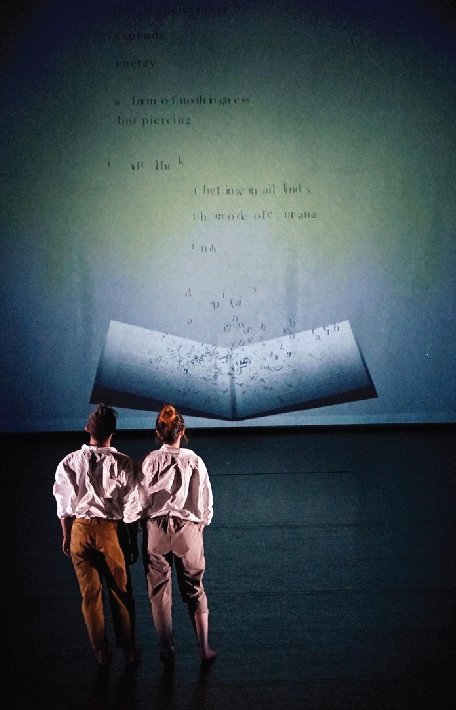
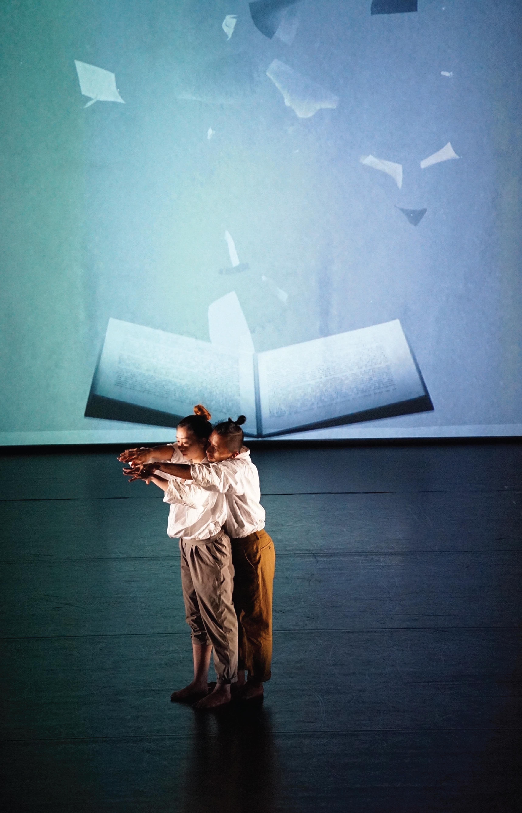

theatre visual backdrop:
live performance:
featured in 2020 Tisch Dance & Technology Works and Installations
strikethrough poem instructions:
LEARN MORE
Create a Strikethrough Poem (website)
On Creating Strikethrough: the Process Behind Erasure Poetry
in Choreographic Scores (essay)
CREDITS
Project by Maxine Zeliha Flasher-Düzgünes
Choreography & Direction: Maxine Zeliha Flasher-Düzgünes
Visuals: Jade Lien
Dancers: Israel Harris, Hiroka Nagai
Sound: Alex MacKinnon, "Drone Work #1"
Lighting Design: Hamilton Guillén



